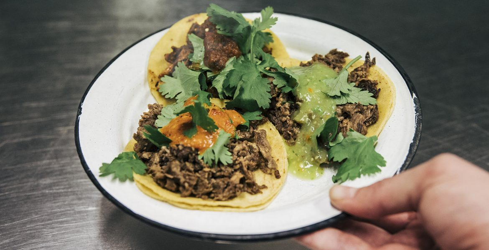

La Neta är en traditionell mexikansk taquería där tacos och quesadillas tillagas precis som i Mexiko. Vi känner passion för vår mat och vill dela vårt sätt att äta tacos med Sverige.


Det finns gott om vegetariska alternativ och även veganska. Vi använder bara råvaror av hög kvalitet och tortillabröden och såserna är hemmagjorda.